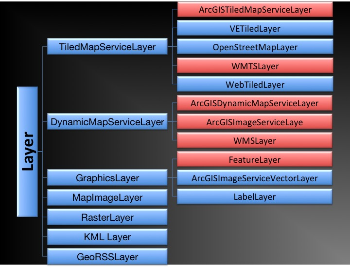
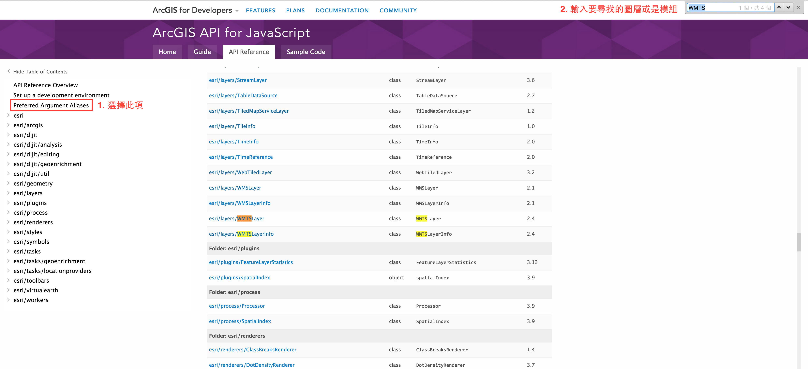

建立web GIS app
ArcGIS開發者資源
|
開發工具
|
dojo / dijit
|
建立web GIS app
範例程式下載
地圖
地圖(Map)
Add map
Navigation工具
Navigation toolbar
API說明
圖層(Layer)
在地圖上加入圖層流程
了解各種服務
決定圖層種類
載入模組
建立圖層物件
將圖層加到地圖上
了解各種服務細節
服務網址
geographic extent
是否有快取
座標系統
圖層種類

載入模組

建立圖層物件
使用
new
建立物件
加入圖層
map.addLayer(layer)
map.addLayers([layer1, layer2, ...])
注意事項
圖層順序
地圖與圖層的座標系統
小工具(widget)
底圖工具(BasemapGallery)
Basemap Gallery
書籤工具(Bookmark)
Bookmark
Task